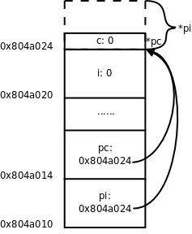

第 23 章 指针
1. 指针的基本概念
在第 12 章「栈与队列」讲过，堆栈有栈顶指针，队列有头指针和尾指针，这些概念中的「指针」本质上是一个整数，是数组的索引，通过指针访问数组中的某个元素。在第 20 章「链接详解」图 20.3「间接寻址」我们又看到另外一种指针的概念，把一个变量所在的内存单元的地址保存在另外一个内存单元中，保存地址的这个内存单元称为指针，通过指针和间接寻址访问变量，这种指针在 C 语言中可以用一个指针类型的变量表示，例如某程序中定义了以下全局变量：
int i;
int *pi = &i;
char c;
char *pc = &c;
这几个变量的内存布局如下图所示，在初学阶段经常要借助于这样的图来理解指针。
图 23.1. 指针的基本概念

这里的 & 是取地址运算符（Address Operator），&i 表示取变量 i 的地址，int *pi = &i; 表示定义一个指向 int 型的指针变量 pi，并用 i 的地址来初始化 pi。我们讲过全局变量只能用常量表达式初始化，如果定义 int p = i; 就错了，因为 i 不是常量表达式，然而用 i 的地址来初始化一个指针却没有错，因为 i 的地址是在编译链接时能确定的，而不需要到运行时才知道，&i 是常量表达式。后面两行代码定义了一个字符型变量 c 和一个指向 c 的字符型指针 pc，注意 pi 和 pc 虽然是不同类型的指针变量，但它们的内存单元都占 4 个字节，因为要保存 32 位的虚拟地址，同理，在 64 位平台上指针变量都占 8 个字节。
我们知道，在同一个语句中定义多个数组，每一个都要有 [] 号：int a[5], b[5];。同样道理，在同一个语句中定义多个指针变量，每一个都要有 * 号，例如：
int *p, *q;
如果写成 int* p, q; 就错了，这样是定义了一个整型指针 p 和一个整型变量 q，定义数组的 [] 号写在变量后面，而定义指针的 * 号写在变量前面，更容易看错。定义指针的 * 号前后空格都可以省，写成 int*p,*q; 也算对，但 * 号通常和类型 int 之间留空格而和变量名写在一起，这样看 int *p, q; 就很明显是定义了一个指针和一个整型变量，就不容易看错了。
如果要让 pi 指向另一个整型变量 j，可以重新对 pi 赋值：
pi = &j;
如果要改变 pi 所指向的整型变量的值，比如把变量 j 的值增加 10，可以写：
*pi = *pi + 10;
这里的 * 号是指针间接寻址运算符（Indirection Operator），*pi 表示取指针 pi 所指向的变量的值，也称为 Dereference 操作，指针有时称为变量的引用（Reference），所以根据指针找到变量称为 Dereference。
& 运算符的操作数必须是左值，因为只有左值才表示一个内存单元，才会有地址，运算结果是指针类型。* 运算符的操作数必须是指针类型，运算结果可以做左值。所以，如果表达式 E 可以做左值，*&E 和 E 等价，如果表达式 E 是指针类型，&*E 和 E 等价。
指针之间可以相互赋值，也可以用一个指针初始化另一个指针，例如：
int *ptri = pi;
或者：
int *ptri;
ptri = pi;
表示 pi 指向哪就让 ptri 也指向哪，本质上就是把变量 pi 所保存的地址值赋给变量 ptri。
用一个指针给另一个指针赋值时要注意，两个指针必须是同一类型的。在我们的例子中，pi 是 int * 型的，pc 是 char * 型的，pi = pc; 这样赋值就是错误的。但是可以先强制类型转换然后赋值：
pi = (int *)pc;
图 23.2. 把 char * 指针的值赋给 int * 指针

现在 pi 指向的地址和 pc 一样，但是通过 *pc 只能访问到一个字节，而通过 *pi 可以访问到 4 个字节，后 3 个字节已经不属于变量 c 了，除非你很确定变量 c 的一个字节和后面 3 个字节组合而成的 int 值是有意义的，否则就不应该给 pi 这么赋值。因此使用指针要特别小心，很容易将指针指向错误的地址，访问这样的地址可能导致段错误，可能读到无意义的值，也可能意外改写了某些数据，使得程序在随后的运行中出错。有一种情况需要特别注意，定义一个指针类型的局部变量而没有初始化：
int main(void)
{
int *p;
...
*p = 0;
...
}
我们知道，在堆栈上分配的变量初始值是不确定的，也就是说指针 p 所指向的内存地址是不确定的，后面用 *p 访问不确定的地址就会导致不确定的后果，如果导致段错误还比较容易改正，如果意外改写了数据而导致随后的运行中出错，就很难找到错误原因了。像这种指向不确定地址的指针称为「野指针」（Unbound Pointer），为避免出现野指针，在定义指针变量时就应该给它明确的初值，或者把它初始化为 NULL：
int main(void)
{
int *p = NULL;
...
*p = 0;
...
}
NULL 在 C 标准库的头文件 stddef.h 中定义：
#define NULL ((void *)0)
就是把地址 0 转换成指针类型，称为空指针，它的特殊之处在于，操作系统不会把任何数据保存在地址 0 及其附近，也不会把地址 0 ~ 0xfff 的页面映射到物理内存，所以任何对地址 0 的访问都会立刻导致段错误。*p = 0; 会导致段错误，就像放在眼前的炸弹一样很容易找到，相比之下，野指针的错误就像埋下地雷一样，更难发现和排除，这次走过去没事，下次走过去就有事。
讲到这里就该讲一下 void * 类型了。在编程时经常需要一种通用指针，可以转换为任意其它类型的指针，任意其它类型的指针也可以转换为通用指针，最初 C 语言没有 void * 类型，就把 char * 当通用指针，需要转换时就用类型转换运算符 ()，ANSI 在将 C 语言标准化时引入了 void * 类型，void * 指针与其它类型的指针之间可以隐式转换，而不必用类型转换运算符。注意，只能定义 void * 指针，而不能定义 void 型的变量，因为 void * 指针和别的指针一样都占 4 个字节，而如果定义 void 型变量（也就是类型暂时不确定的变量），编译器不知道该分配几个字节给变量。同样道理，void * 指针不能直接 Dereference，而必须先转换成别的类型的指针再做 Dereference。void * 指针常用于函数接口，比如：
void func(void *pv)
{
/* *pv = 'A' is illegal */
char *pchar = pv;
*pchar = 'A';
}
int main(void)
{
char c;
func(&c);
printf("%c\n", c);
...
}
下一章讲函数接口时再详细介绍 void * 指针的用处。
2. 指针类型的参数和返回值
首先看以下程序：
例 23.1. 指针参数和返回值
#include <stdio.h>
int *swap(int *px, int *py)
{
int temp;
temp = *px;
*px = *py;
*py = temp;
return px;
}
int main(void)
{
int i = 10, j = 20;
int *p = swap(&i, &j);
printf("now i=%d j=%d *p=%d\n", i, j, *p);
return 0;
}
我们知道，调用函数的传参过程相当于用实参定义并初始化形参，swap(&i, &j) 这个调用相当于：
int *px = &i;
int *py = &j;
所以 px 和 py 分别指向 main 函数的局部变量 i 和 j，在 swap 函数中读写 *px 和 *py 其实是读写 main 函数的 i 和 j。尽管在 swap 函数的作用域中访问不到 i 和 j 这两个变量名，却可以通过地址访问它们，最终 swap 函数将 i 和 j 的值做了交换。
上面的例子还演示了函数返回值是指针的情况，return px; 语句相当于定义了一个临时变量并用 px 初始化：
int *tmp = px;
然后临时变量 tmp 的值成为表达式 swap(&i, &j) 的值，然后在 main 函数中又把这个值赋给了 p，相当于：
int *p = tmp;
最后的结果是 swap 函数的 px 指向哪就让 main 函数的 p 指向哪。我们知道 px 指向 i，所以 p 也指向 i。
习题
- 对照本节的描述，像图 23.1「指针的基本概念」那样画图理解函数的调用和返回过程。在下一章我们会看到更复杂的参数和返回值形式，在初学阶段对每个程序都要画图理解它的运行过程，只要基本概念清晰，无论多复杂的形式都应该能正确分析。
- 现在回头看第 3 章「简单函数」第 3 节「形参和实参」的习题 1，那个程序应该怎么改？
3. 指针与数组
先看个例子，有如下语句：
int a[10];
int *pa = &a[0];
pa++;
首先指针 pa 指向 a[0] 的地址，注意后缀运算符的优先级高于单目运算符，所以是取 a[0] 的地址，而不是取 a 的地址。然后 pa++ 让 pa 指向下一个元素（也就是 a[1]），由于 pa 是 int * 指针，一个 int 型元素占 4 个字节，所以 pa++ 使 pa 所指向的地址加 4，注意不是加 1。
下面画图理解。从前面的例子我们发现，地址的具体数值其实无关紧要，关键是要说明地址之间的关系（a[1] 位于 a[0] 之后 4 个字节处）以及指针与变量之间的关系（指针保存的是变量的地址），现在我们换一种画法，省略地址的具体数值，用方框表示存储空间，用箭头表示指针和变量之间的关系。
图 23.3. 指针与数组

既然指针可以用 ++ 运算符，当然也可以用 +、- 运算符，pa+2 这个表达式也是有意义的，如上图所示，pa 指向 a[1]，那么 pa+2 指向 a[3]。事实上，E1[E2] 这种写法和 (*((E1)+(E2))) 是等价的，*(pa+2) 也可以写成 pa[2]，pa 就像数组名一样，其实数组名也没有什么特殊的，a[2] 之所以能取数组的第 2 个元素，是因为它等价于 *(a+2)，在第 8 章「数组」第 1 节「数组的基本概念」讲过数组名做右值时自动转换成指向首元素的指针，所以 a[2] 和 pa[2] 本质上是一样的，都是通过指针间接寻址访问元素。由于 (*((E1)+(E2))) 显然可以写成 (*((E2)+(E1)))，所以 E1[E2] 也可以写成 E2[E1]，这意味着 2[a]、2[pa] 这种写法也是对的，但一般不这么写。另外，由于 a 做右值使用时和 &a[0] 是一个意思，所以 int *pa = &a[0]; 通常不这么写，而是写成更简洁的形式 int *pa = a;。
在第 8 章「数组」第 1 节「数组的基本概念」还讲过 C 语言允许数组下标是负数，现在你该明白为什么这样规定了。在上面的例子中，表达式 pa[-1] 是合法的，它和 a[0] 表示同一个元素。
现在猜一下，两个指针变量做比较运算（>、>=、<、<=、==、!=）表示什么意义？两个指针变量做减法运算又表示什么意义？
根据什么来猜？根据第 3 章「简单函数」第 3 节「形参和实参」讲过的 Rule of Least Surprise 原则。你理解了指针和常数加减的概念，再根据以往使用比较运算的经验，就应该猜到 pa + 2 > pa，pa - 1 == a，所以指针之间的比较运算比的是地址，C 语言正是这样规定的，不过 C 语言的规定更为严谨，只有指向同一个数组中元素的指针之间相互比较才有意义，否则没有意义。那么两个指针相减表示什么？pa - a 等于几？因为 pa - 1 == a，所以 pa - a 显然应该等于 1，指针相减表示两个指针之间相差的元素个数，同样只有指向同一个数组中元素的指针之间相减才有意义。两个指针相加表示什么？想不出来它能有什么意义，因此 C 语言也规定两个指针不能相加。假如 C 语言为指针相加也规定了一种意义，那就相当 Surprise 了，不符合一般的经验。无论是设计编程语言还是设计函数接口或人机界面都是这个道理，应该尽可能让用户根据以往的经验知识就能推断出该系统的基本用法。
在取数组元素时用数组名和用指针的语法一样，但如果把数组名做左值使用，和指针就有区别了。例如 pa++ 是合法的，但 a++ 就不合法，pa = a + 1 是合法的，但 a = pa + 1 就不合法。数组名做右值时转换成指向首元素的指针，但做左值仍然表示整个数组的存储空间，而不是首元素的存储空间，数组名做左值还有一点特殊之处，不支持 ++、赋值这些运算符，但支持取地址运算符 &，所以 &a 是合法的，我们将在本章第 7 节「指向数组的指针与多维数组」介绍这种语法。
在函数原型中，如果参数是数组，则等价于参数是指针的形式，例如：
void func(int a[10])
{
...
}
等价于：
void func(int *a)
{
...
}
第一种形式方括号中的数字可以不写，仍然是等价的：
void func(int a[])
{
...
}
参数写成指针形式还是数组形式对编译器来说没区别，都表示这个参数是指针，之所以规定两种形式是为了给读代码的人提供有用的信息，如果这个参数指向一个元素，通常写成指针的形式，如果这个参数指向一串元素中的首元素，则经常写成数组的形式。
4. 指针与 const 限定符
const 限定符和指针结合起来常见的情况有以下几种。
const int *a;
int const *a;
这两种写法是一样的，a 是一个指向 const int 型的指针，a 所指向的内存单元不可改写，所以 (*a)++ 是不允许的，但 a 可以改写，所以 a++ 是允许的。
int * const a;
a 是一个指向 int 型的 const 指针，*a 是可以改写的，但 a 不允许改写。
int const * const a;
a 是一个指向 const int 型的 const 指针，因此 *a 和 a 都不允许改写。
指向非 const 变量的指针或者非 const 变量的地址可以传给指向 const 变量的指针，编译器可以做隐式类型转换，例如：
char c = 'a';
const char *pc = &c;
但是，指向 const 变量的指针或者 const 变量的地址不可以传给指向非 const 变量的指针，以免透过后者意外改写了前者所指向的内存单元，例如对下面的代码编译器会报警告：
const char c = 'a';
char *pc = &c;
即使不用 const 限定符也能写出功能正确的程序，但良好的编程习惯应该尽可能多地使用 const，因为：
const给读代码的人传达非常有用的信息。比如一个函数的参数是const char *，你在调用这个函数时就可以放心地传给它char *或const char *指针，而不必担心指针所指的内存单元被改写。- 尽可能多地使用
const限定符，把不该变的都声明成只读，这样可以依靠编译器检查程序中的Bug，防止意外改写数据。 const对编译器优化是一个有用的提示，编译器也许会把const变量优化成常量。
在第 19 章「汇编与 C 之间的关系」第 3 节「变量的存储布局」我们看到，字符串字面值通常分配在 .rodata 段，而在第 8 章「数组」第 4 节「字符串」提到，字符串字面值类似于数组名，做右值使用时自动转换成指向首元素的指针，这种指针应该是 const char * 型。我们知道 printf 函数原型的第一个参数是 const char * 型，可以把 char * 或 const char * 指针传给它，所以下面这些调用都是合法的：
const char *p = "abcd";
const char str1[5] = "abcd";
char str2[5] = "abcd";
printf(p);
printf(str1);
printf(str2);
printf("abcd");
注意上面第一行，如果要定义一个指针指向字符串字面值，这个指针应该是 const char * 型，如果写成 char *p = "abcd"; 就不好了，有隐患，例如：
int main(void)
{
char *p = "abcd";
...
*p = 'A';
...
}
p 指向 .rodata 段，不允许改写，但编译器不会报错，在运行时会出现段错误。
5. 指针与结构体
首先定义一个结构体类型，然后定义这种类型的变量和指针：
struct unit {
char c;
int num;
};
struct unit u;
struct unit *p = &u;
要通过指针 p 访问结构体成员可以写成 (*p).c 和 (*p).num，为了书写方便，C 语言提供了 -> 运算符，也可以写成 p->c 和 p->num。
6. 指向指针的指针与指针数组
指针可以指向基本类型，也可以指向复合类型，因此也可以指向另外一个指针变量，称为指向指针的指针。
int i;
int *pi = &i;
int **ppi = π
这样定义之后，表达式 *ppi 取 pi 的值，表达式 **ppi 取 i 的值。请读者自己画图理解 i、pi、ppi 这三个变量之间的关系。
很自然地，也可以定义指向「指向指针的指针」的指针，但是很少用到：
int ***p;
数组中的每个元素可以是基本类型，也可以复合类型，因此也可以是指针类型。例如定义一个数组 a 由 10 个元素组成，每个元素都是 int * 指针：
int *a[10];
这称为指针数组。int *a[10]; 和 int **pa; 之间的关系类似于 int a[10]; 和 int *pa; 之间的关系：a 是由一种元素组成的数组，pa 则是指向这种元素的指针。所以，如果 pa 指向 a 的首元素：
int *a[10];
int **pa = &a[0];
则 pa[0] 和 a[0] 取的是同一个元素，唯一比原来复杂的地方在于这个元素是一个 int * 指针，而不是基本类型。
我们知道 main 函数的标准原型应该是 int main(int argc, char *argv[]);。argc 是命令行参数的个数。而 argv 是一个指向指针的指针，为什么不是指针数组呢？因为前面讲过，函数原型中的 [] 表示指针而不表示数组，等价于 char **argv。那为什么要写成 char *argv[] 而不写成 char **argv 呢？这样写给读代码的人提供了有用信息，argv 不是指向单个指针，而是指向一个指针数组的首元素。数组中每个元素都是 char * 指针，指向一个命令行参数字符串。
例 23.2. 打印命令行参数
#include <stdio.h>
int main(int argc, char *argv[])
{
int i;
for(i = 0; i < argc; i++)
printf("argv[%d]=%s\n", i, argv[i]);
return 0;
}
编译执行：
$ gcc main.c
$ ./a.out a b c
argv[0]=./a.out
argv[1]=a
argv[2]=b
argv[3]=c
$ ln -s a.out printargv
$ ./printargv d e
argv[0]=./printargv
argv[1]=d
argv[2]=e
注意程序名也算一个命令行参数，所以执行 ./a.out a b c 这个命令时，argc 是 4，argv 如下图所示：
图 23.4. argv 指针数组

由于 argv[4] 是 NULL，我们也可以这样循环遍历 argv：
for(i=0; argv[i] != NULL; i++)
NULL 标识着 argv 的结尾，这个循环碰到 NULL 就结束，因而不会访问越界，这种用法很形象地称为 Sentinel，NULL 就像一个哨兵守卫着数组的边界。
在这个例子中我们还看到，如果给程序建立符号链接，然后通过符号链接运行这个程序，就可以得到不同的 argv[0]。通常，程序会根据不同的命令行参数做不同的事情，例如 ls -l 和 ls -R 打印不同的文件列表，而有些程序会根据不同的 argv[0] 做不同的事情，例如专门针对嵌入式系统的开源项目 Busybox，将各种 Linux 命令裁剪后集于一身，编译成一个可执行文件 busybox，安装时将 busybox 程序拷到嵌入式系统的 /bin 目录下，同时在 /bin、/sbin、/usr/bin、/usr/sbin 等目录下创建很多指向 /bin/busybox 的符号链接，命名为 cp、ls、mv、ifconfig 等等，不管执行哪个命令其实最终都是在执行 /bin/busybox，它会根据 argv[0] 来区分不同的命令。
习题
-
想想以下定义中的
const分别起什么作用？编写程序验证你的猜测。const char **p; char *const *p; char **const p;
7. 指向数组的指针与多维数组
指针可以指向复合类型，上一节讲了指向指针的指针，这一节学习指向数组的指针。以下定义一个指向数组的指针，该数组有 10 个 int 元素：
int (*a)[10];
和上一节指针数组的定义 int *a[10]; 相比，仅仅多了一个 () 括号。如何记住和区分这两种定义呢？我们可以认为 [] 比 * 有更高的优先级，如果 a 先和 * 结合则表示 a 是一个指针，如果 a 先和 [] 结合则表示 a 是一个数组。int *a[10]; 这个定义可以拆成两句：
typedef int *t;
t a[10];
t 代表 int * 类型，a 则是由这种类型的元素组成的数组。int (*a)[10]; 这个定义也可以拆成两句：
typedef int t[10];
t *a;
t 代表由 10 个 int 组成的数组类型，a 则是指向这种类型的指针。
现在看指向数组的指针如何使用：
int a[10];
int (*pa)[10] = &a;
a 是一个数组，在 &a 这个表达式中，数组名做左值，取整个数组的首地址赋给指针 pa。注意，&a[0] 表示数组 a 的首元素的首地址，而 &a 表示数组 a 的首地址，显然这两个地址的数值相同，但这两个表达式的类型是两种不同的指针类型，前者的类型是 int *，而后者的类型是 int (*)[10]。*pa 就表示 pa 所指向的数组 a，所以取数组的 a[0] 元素可以用表达式 (*pa)[0]。注意到 *pa 可以写成 pa[0]，所以 (*pa)[0] 这个表达式也可以改写成 pa[0][0]，pa 就像一个二维数组的名字，它表示什么含义呢？下面把 pa 和二维数组放在一起做个分析。
int a[5][10]; 和 int (*pa)[10]; 之间的关系同样类似于 int a[10]; 和 int *pa; 之间的关系：a 是由一种元素组成的数组，pa 则是指向这种元素的指针。所以，如果 pa 指向 a 的首元素：
int a[5][10];
int (*pa)[10] = &a[0];
则 pa[0] 和 a[0] 取的是同一个元素，唯一比原来复杂的地方在于这个元素是由 10 个 int 组成的数组，而不是基本类型。这样，我们可以把 pa 当成二维数组名来使用，pa[1][2] 和 a[1][2] 取的也是同一个元素，而且 pa 比 a 用起来更灵活，数组名不支持赋值、自增等运算，而指针可以支持，pa++ 使 pa 跳过二维数组的一行（40 个字节），指向 a[1] 的首地址。
习题
-
定义以下变量：
char a[4][3][2] = {{{'a', 'b'}, {'c', 'd'}, {'e', 'f'}}, {{'g', 'h'}, {'i', 'j'}, {'k', 'l'}}, {{'m', 'n'}, {'o', 'p'}, {'q', 'r'}}, {{'s', 't'}, {'u', 'v'}, {'w', 'x'}}}; char (*pa)[2] = &a[1][0]; char (*ppa)[3][2] = &a[1];要想通过
pa或ppa访问数组a中的'r'元素，分别应该怎么写？
8. 函数类型和函数指针类型
在 C 语言中，函数也是一种类型，可以定义指向函数的指针。我们知道，指针变量的内存单元存放一个地址值，而函数指针存放的就是函数的入口地址（位于 .text 段）。下面看一个简单的例子：
例 23.3. 函数指针
#include <stdio.h>
void say_hello(const char *str)
{
printf("Hello %s\n", str);
}
int main(void)
{
void (*f)(const char *) = say_hello;
f("Guys");
return 0;
}
分析一下变量 f 的类型声明 void (*f)(const char *)，f 首先跟 * 号结合在一起，因此是一个指针。(*f) 外面是一个函数原型的格式，参数是 const char *，返回值是 void，所以 f 是指向这种函数的指针。而 say_hello 的参数是 const char *，返回值是 void，正好是这种函数，因此 f 可以指向 say_hello。注意，say_hello 是一种函数类型，而函数类型和数组类型类似，做右值使用时自动转换成函数指针类型，所以可以直接赋给 f，当然也可以写成 void (*f)(const char *) = &say_hello;，把函数 say_hello 先取地址再赋给 f，就不需要自动类型转换了。
可以直接通过函数指针调用函数，如上面的 f("Guys")，也可以先用 *f 取出它所指的函数类型，再调用函数，即 (*f)("Guys")。可以这么理解：函数调用运算符 () 要求操作数是函数指针，所以 f("Guys") 是最直接的写法，而 say_hello("Guys") 或 (*f)("Guys") 则是把函数类型自动转换成函数指针然后做函数调用。
下面再举几个例子区分函数类型和函数指针类型。首先定义函数类型 F：
typedef int F(void);
这种类型的函数不带参数，返回值是 int。那么可以这样声明 f 和 g：
F f, g;
相当于声明：
int f(void);
int g(void);
下面这个函数声明是错误的：
F h(void);
因为函数可以返回 void 类型、标量类型、结构体、联合体，但不能返回函数类型，也不能返回数组类型。而下面这个函数声明是正确的：
F *e(void);
函数 e 返回一个 F * 类型的函数指针。如果给 e 多套几层括号仍然表示同样的意思：
F *((e))(void);
但如果把 * 号也套在括号里就不一样了：
int (*fp)(void);
这样声明了一个函数指针，而不是声明一个函数。fp 也可以这样声明：
F *fp;
通过函数指针调用函数和直接调用函数相比有什么好处呢？我们研究一个例子。回顾第 7 章「结构体」第 3 节「数据类型标志」的习题 1，由于结构体中多了一个类型字段，需要重新实现 real_part、img_part、magnitude、angle 这些函数，你当时是怎么实现的？大概是这样吧：
double real_part(struct complex_struct z)
{
if (z.t == RECTANGULAR)
return z.a;
else
return z.a * cos(z.b);
}
现在类型字段有两种取值，RECTANGULAR 和 POLAR，每个函数都要 if ... else ...，如果类型字段有三种取值呢？每个函数都要 if ... else if ... else，或者 switch ... case ...。这样维护代码是不够理想的，现在我用函数指针给出一种实现：
double rect_real_part(struct complex_struct z)
{
return z.a;
}
double rect_img_part(struct complex_struct z)
{
return z.b;
}
double rect_magnitude(struct complex_struct z)
{
return sqrt(z.a * z.a + z.b * z.b);
}
double rect_angle(struct complex_struct z)
{
double PI = acos(-1.0);
if (z.a > 0)
return atan(z.b / z.a);
else
return atan(z.b / z.a) + PI;
}
double pol_real_part(struct complex_struct z)
{
return z.a * cos(z.b);
}
double pol_img_part(struct complex_struct z)
{
return z.a * sin(z.b);
}
double pol_magnitude(struct complex_struct z)
{
return z.a;
}
double pol_angle(struct complex_struct z)
{
return z.b;
}
double (*real_part_tbl[])(struct complex_struct) = { rect_real_part, pol_real_part };
double (*img_part_tbl[])(struct complex_struct) = { rect_img_part, pol_img_part };
double (*magnitude_tbl[])(struct complex_struct) = { rect_magnitude, pol_magnitude };
double (*angle_tbl[])(struct complex_struct) = { rect_angle, pol_angle };
#define real_part(z) real_part_tbl[z.t](z)
#define img_part(z) img_part_tbl[z.t](z)
#define magnitude(z) magnitude_tbl[z.t](z)
#define angle(z) angle_tbl[z.t](z)
当调用 real_part(z) 时，用类型字段 z.t 做索引，从指针数组 real_part_tbl 中取出相应的函数指针来调用，也可以达到 if ... else ... 的效果，但相比之下这种实现更好，每个函数都只做一件事情，而不必用 if ... else ... 兼顾好几件事情，比如 rect_real_part 和 pol_real_part 各做各的，互相独立，而不必把它们的代码都耦合到一个函数中。「低耦合，高内聚」（Low Coupling, High Cohesion）是程序设计的一条基本原则，这样可以更好地复用现有代码，使代码更容易维护。如果类型字段 z.t 又多了一种取值，只需要添加一组新的函数，修改函数指针数组，原有的函数仍然可以不加改动地复用。
9. 不完全类型和复杂声明
在第 7 章「结构体」第 1 节「复合类型与结构体」讲过算术类型、标量类型的概念，现在又学习了几种类型，我们完整地总结一下 C 语言的类型。下图出自 Standard C。
图 23.5. C 语言类型总结

C 语言的类型分为函数类型、对象类型和不完全类型三大类。对象类型又分为标量类型和非标量类型。指针类型属于标量类型，因此也可以做逻辑与、或、非运算的操作数和 if、for、while 的控制表达式，NULL 指针表示假，非 NULL 指针表示真。不完全类型是暂时没有完全定义好的类型，编译器不知道这种类型该占几个字节的存储空间，例如：
struct s;
union u;
char str[];
具有不完全类型的变量可以通过多次声明组合成一个完全类型，比如数组 str 声明两次：
char str[];
char str[10];
当编译器碰到第一个声明时，认为 str 是一个不完全类型，碰到第二个声明时 str 就组合成完全类型了，如果编译器处理到程序文件的末尾仍然无法把 str 组合成一个完全类型，就会报错。读者可能会想，这个语法有什么用呢？为何不在第一次声明时就把 str 声明成完全类型？有些情况下这么做有一定的理由，比如第一个声明是写在头文件里的，第二个声明写在 .c 文件里，这样如果要改数组长度，只改 .c 文件就行了，头文件可以不用改。
不完全的结构体类型有重要作用：
struct s {
struct t *pt;
};
struct t {
struct s *ps;
};
struct s 和 struct t 各有一个指针成员指向另一种类型。编译器从前到后依次处理，当看到 struct s { struct t* pt; }; 时，认为 struct t 是一个不完全类型，pt 是一个指向不完全类型的指针，尽管如此，这个指针却是完全类型，因为不管什么指针都占 4 个字节存储空间，这一点很明确。然后编译器又看到 struct t { struct s *ps; };，这时 struct t 有了完整的定义，就组合成一个完全类型了，pt 的类型就组合成一个指向完全类型的指针。由于 struct s 在前面有完整的定义，所以 struct s *ps; 也定义了一个指向完全类型的指针。
这样的类型定义是错误的：
struct s {
struct t ot;
};
struct t {
struct s os;
};
编译器看到 struct s { struct t ot; }; 时，认为 struct t 是一个不完全类型，无法定义成员 ot，因为不知道它该占几个字节。所以结构体中可以递归地定义指针成员，但不能递归地定义变量成员，你可以设想一下，假如允许递归地定义变量成员，struct s 中有一个 struct t，struct t 中又有一个 struct s，struct s 又中有一个 struct t，这就成了一个无穷递归的定义。
以上是两个结构体构成的递归定义，一个结构体也可以递归定义：
struct s {
char data[6];
struct s* next;
};
当编译器处理到第一行 struct s { 时，认为 struct s 是一个不完全类型，当处理到第三行 struct s *next; 时，认为 next 是一个指向不完全类型的指针，当处理到第四行}; 时，struct s 成了一个完全类型，next 也成了一个指向完全类型的指针。类似这样的结构体是很多种数据结构的基本组成单元，如链表、二叉树等，我们将在后面详细介绍。下图示意了由几个 struct s 结构体组成的链表，这些结构体称为链表的节点（Node）。
图 23.6. 链表

head 指针是链表的头指针，指向第一个节点，每个节点的 next 指针域指向下一个节点，最后一个节点的 next 指针域为 NULL，在图中用 0 表示。
可以想像得到，如果把指针和数组、函数、结构体层层组合起来可以构成非常复杂的类型，下面看几个复杂的声明。
typedef void (*sighandler_t)(int);
sighandler_t signal(int signum, sighandler_t handler);
这个声明来自 signal(2)。sighandler_t 是一个函数指针，它所指向的函数带一个参数，返回值为 void，signal 是一个函数，它带两个参数，一个 int 参数，一个 sighandler_t 参数，返回值也是 sighandler_t 参数。如果把这两行合成一行写，就是：
void (*signal(int signum, void (*handler)(int)))(int);
在分析复杂声明时，要借助 typedef 把复杂声明分解成几种基本形式：
T *p;，p是指向T类型的指针。T a[];，a是由T类型的元素组成的数组，但有一个例外，如果a是函数的形参，则相当于T *a;T1 f(T2, T3...);，f是一个函数，参数类型是T2、T3等等，返回值类型是T1。
我们分解一下这个复杂声明：
int (*(*fp)(void *))[10];
-
fp和*号括在一起，说明fp是一个指针，指向T1类型：typedef int (*T1(void *))[10]; T1 *fp; -
T1应该是一个函数类型，参数是void *，返回值是T2类型：typedef int (*T2)[10]; typedef T2 T1(void *); T1 *fp; -
T2和*号括在一起，应该也是个指针，指向T3类型：typedef int T3[10]; typedef T3 *T2; typedef T2 T1(void *); T1 *fp;显然，
T3是一个int数组，由 10 个元素组成。分解完毕。